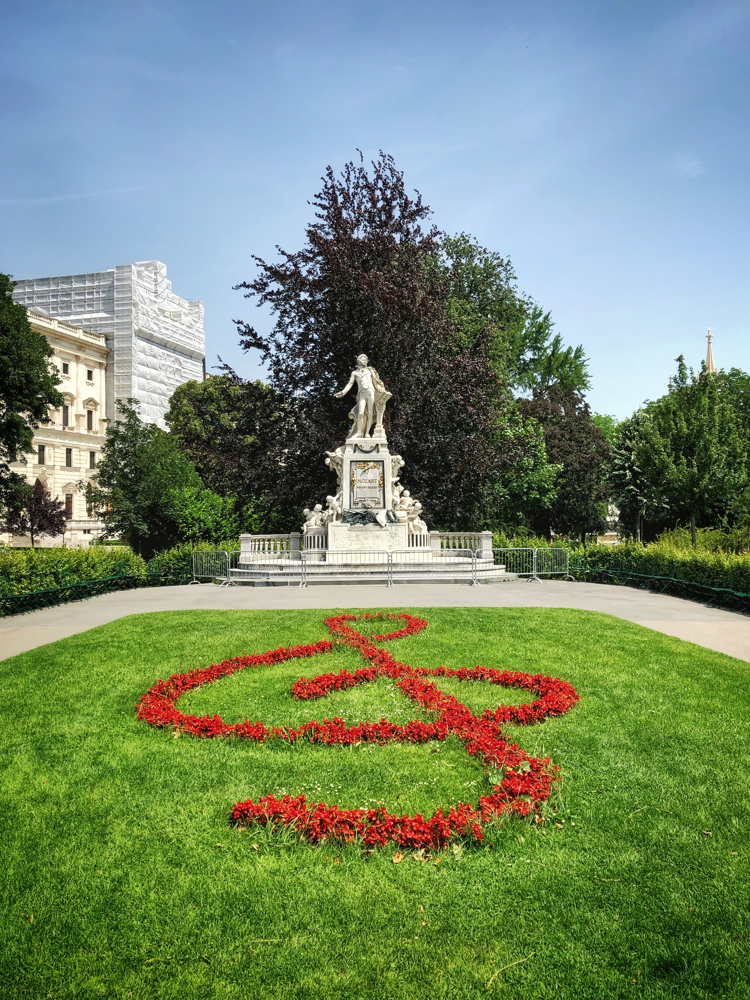

Costanze was the wife and later widow of a great Composer of the time. Her sister Aloysia rejected the Composer’s proposal before he married Costanze. Cäcilia Weber was the mother of the two girls.
It was a long sobeful month. The young widow was still amongst her family seeking their comfort. For Costanze’s sake, her famous singer-sister called off a big concerto supposed to take place in Paris. She had to change 6-7 wagon connections to get to the family’s house at Mannheim. The year was almost 1792. A great but not-so-petite power had been rising to the west. Her thoughts were racing between feeling sorry for her most-quarrelsome sister in her sorrow and the thought that she could have been the bewidowed one, should she had reacted to the giggling wooings, and later, flirting, of the deceased Composer. Upon crossing the French border, Aloysia sighed girlishly and started chanting, aloud, some Baroque songs in Italian (of course) with some occasional slip of the tongue in German. Totally replacing a famous and common French song that had stuck to her tongue from the moment she left Paris. That song must have resembled today’s “Non, rien de rien”. A great power to the West is grabbing its not-so-small fist around the French people necks.
At the fancy family’s house at Mannheim, Frau Cäcilia took over the middle of the sofa, where a great and permanent depression had been produced from years of heavy use. Poor young Constanze kneeled near her legs, sunk her head into the apron covering the Frau’s great thighs. Good old Salieri wore a noble countenance, full of sincere condolence. Naturally, he sat behind the piano, and had been playing the Requiem incessantly, declaring every now and then a warm condolence messages to the family from the emperor of Austria. As one of the top entrepreneurs in Mannheim, at least for her age group, Frau Cäcilia had so many business plans to implement. Take for example her mega plan to get rid of the Composer. She employed an intercontinental network of witches from all fields of grey and black magic, in order to keep him away from her daughters. This of course was not executable without the generous financing by Salieri and other envious and mediocre composers. The beloved Composer’s sudden death doomed the whole business to collapse and rendered many witches unemployed. But the past belongs to the past. Now she has a yet greater initiative. A great power is rising to the North-West. And she must sit exactly at the storm’s eye. But first they should learn French. This was politically unfavourable, logistically impossible and financially unfathomable…Eureka! She can collaborate with Herr Salieri again. She knows that no solution is perfect but a demi perfect one is workable. Italian is basically a pronounceable French, she thought, leaving your Larynx intact. She will rather wait until he finishes the current replay of the Requiem and should talk to him at once and in privacy.
Aloysia stood at the front of the gate to the lovely garden that encapsulated the family’s house. Viennese roses dominated the closer circle while Bavarian lilies covered the pond in the centre. She claimed the stairs briskly, throwing some French salutes to the servants that came across. Once she got to the halls’ entrance, she met on the doorway her mother accompanied with Herr Salieri on their way out. Must be for an important matter. She immediately snapped her mother’s elbow, releasing Salieri from her grip. They both watched him hopping back to the piano and immediately resuming playing the Requiem, with a remorseful and noble countenance. Aloysia dragged her mother to the balcony. The old Frau’s face was rushing back and forth between blushing and pallor. “Mother”, Aloysia started, “I fell in love with a very important French Herr” Upon hearing “very important Herr” Cäcilia’s imagination depicted the neat portrait of the regional Manager-in Charge of the post office. She started to mutter something about “politically unfavorable” connections and associations, not to mention the long working hours of diligent managers… “Mother”! Aloysia resumed, “I AM MARRYING NAPOLEON BONAPARTE”.
